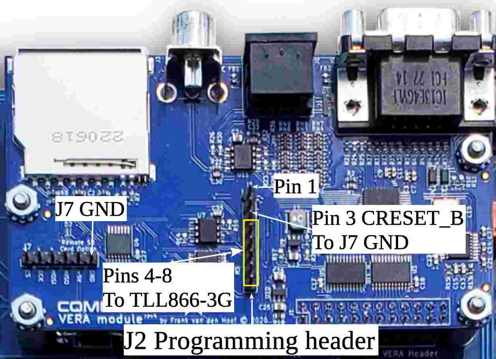
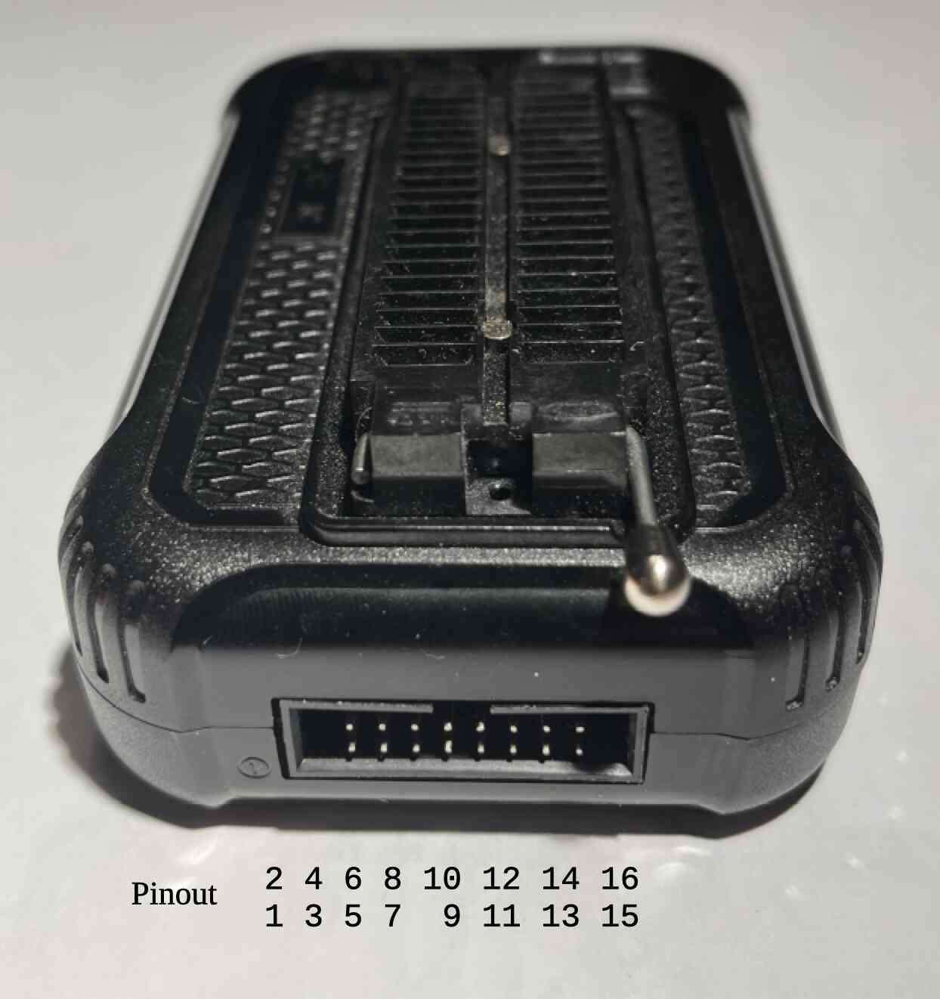
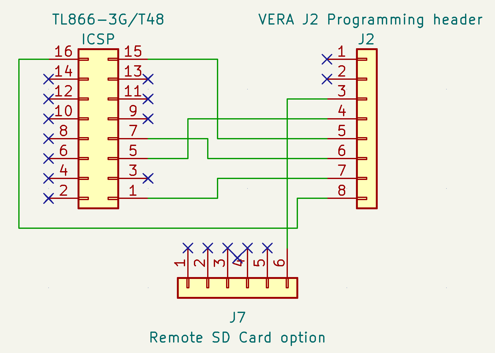

Appendix B: VERA Firmware Recovery#
WARNING: This is a draft that may contain errors or omissions that could damage your hardware.
Using a Windows PC to upgrade or recover a VERA#
Target Component: VERA
Programmer: TL866-3G/T48
Software: Xgpro
Host OS: Windows
Before You Start#
Before starting, it is recommended to disconnect the Commander X16’s PSU’s power from the wall socket. You will need to reconnect power later, but while connecting the programmer to the system, it is safer to disconnect mains power from the power supply. Power is supplied to parts of the main board even when the computer is turned off.use_directory_urls To perform the upgrade, you will need the following:
A TL866-3G/T48 programmer
The Xgpro software
Female-to-female jumper wires
Programmer Wiring Setup#
The VERA 8-pin header should be connected as follows:
VERA J2 Pin |
Connect to |
|---|---|
1 (+5V) |
Not connected |
2 (CDONE) |
Not connected |
3 (CRESET_B) |
VERA, J7 GND pin |
4 (SPI_MISO) |
TL866-3G/T48, ICSP pin 5 (MISO) |
5 (SPI_MOSI) |
TL866-3G/T48, ICSP pin 15 (MOSI) |
6 (SPI_SCK) |
TL866-3G/T48, ICSP pin 7 (SCK) |
7 (SPI_SEL_N) |
TL866-3G/T48, ICSP pin 1 (/CS) |
8 (GND) |
TL866-3G/T48, ICSP pin 16 (GND) |
Image 1: Vera J2 programming header and J7 header.

Image 2: TL866-3G/T48 ICSP header.

Image 3: Schematics for connection between the VERA board and the TL866-3G/T48.

Powering the Target Component#
The VERA board is programmed while it is still mounted in the Commander X16 and will be powered by the computer’s PSU, not by the programmer.
Before proceeding with the firmware upgrade, ensure that the wiring is correct. Then, connect the Commander X16 to the wall socket and press the computer’s power button to ensure that 5V is supplied to the VERA board.
Please note that the VERA’s FPGA is held in reset because VERA pin 3 (CRESET_B) is connected to ground. As a result, you will not see any screen output during the upgrade process.
Programmer Software Setup#
Open the Xgpro software and configure the following settings:
Select target chip: W25Q16JV
Setup interface:
Choose ICSP port
Uncheck ICSP_VCC_Enable (as VERA is powered by the X16)
Click on “ID Check” to verify the connection
The response value should be EF 40 15
If it is not, double-check the wiring before proceeding
Update/Flash Procedure#
In the Xgpro software, follow these steps:
Click on “Load” to load the firmware into the software buffer
After loading the firmware into the software buffer, click on “Prog.” to upload the firmware to the VERA board.
Once the update is complete, press the power button to turn off the Commander X16. Then, disconnect the computer from the wall socket. Finally, remove all wires from the VERA pin header.
Congratulations! The firmware update for VERA is now complete.